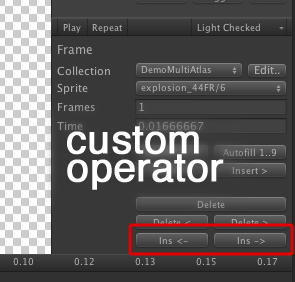

Documentation
Script Reference
Forum
Documentation
Script Reference
Forum
Animation editor operators is a powerful plugin system built into the animation editor. It can be used to extend the animation editor without having to change the source code to the editor - the only requirement is that your animation editor class inherits from the base operator class (tk2dEditor.SpriteAnimationEditor.AnimOperator), and that it exists within an Editor folder.
You can use animation operators to streamline workflow specifically for your project, without having to hack into 2D Toolkit code.
A large number of the built in operators are implemented using the same system. Refer to tk2dSpriteAnimationAnimOp.cs for the complete list.
A sample operator - This is exactly the same as the built in Insert operator, but will add itself after all the built in operators. This file should be dropped into an editor folder for it to work.

using UnityEngine; using UnityEditor; using System.Collections; using System.Collections.Generic; // It is advisible to keep your code within this namespace to avoid name collisions // It isn't essential though. namespace tk2dEditor.SpriteAnimationEditor { public class SampleInsert : AnimOperator { public SampleInsert() { // SortID defines the order in which the operators are processed, and drawn in the inspector. // Negative numbers are reserved for the editor and may change without warning. sortId = 100; } // Check the AnimOperator class for the different supported operator types. // This sample simply deletes the frames after the currently selected clip. public override bool OnFrameGroupInspectorGUI(tk2dSpriteAnimationClip selectedClip, List<ClipEditor.FrameGroup> frameGroups, TimelineEditor.State state ) { // WrapMode.Single is a special case - you are only allowed to have one frame in a "Single" clip. // If you don't handle this, tk2d will truncate the list when it is Committed. if (selectedClip.wrapMode == tk2dSpriteAnimationClip.WrapMode.Single) return false; // Keep track of changes. // In a lot of cases, a simple bool will suffice. This is used later to // tell the system that something has changed. bool changed = false; GUILayout.BeginHorizontal(); if (GUILayout.Button("Ins <-", EditorStyles.miniButton)) { frameGroups.Insert(state.selectedFrame, AnimOperatorUtil.NewFrameGroup(frameGroups, state.selectedFrame)); // Make sure state is valid after performing your operation. // For instance, if the selected frame is deleted, ensure it isn't selected any more. state.selectedFrame++; changed = true; } if (GUILayout.Button("Ins ->", EditorStyles.miniButton)) { frameGroups.Insert(state.selectedFrame + 1, AnimOperatorUtil.NewFrameGroup(frameGroups, state.selectedFrame)); changed = true; } GUILayout.EndHorizontal(); // Tell the caller what has changed operations = changed ? AnimEditOperations.ClipContentChanged : AnimEditOperations.None; return changed; } } }